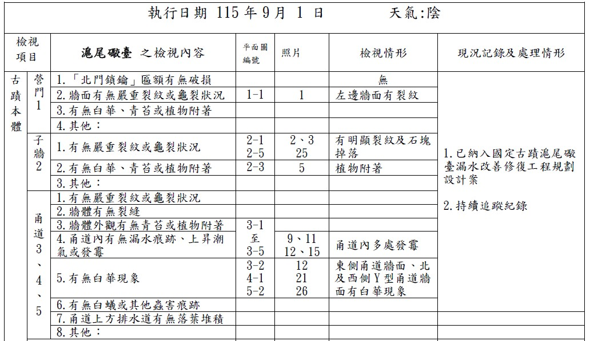
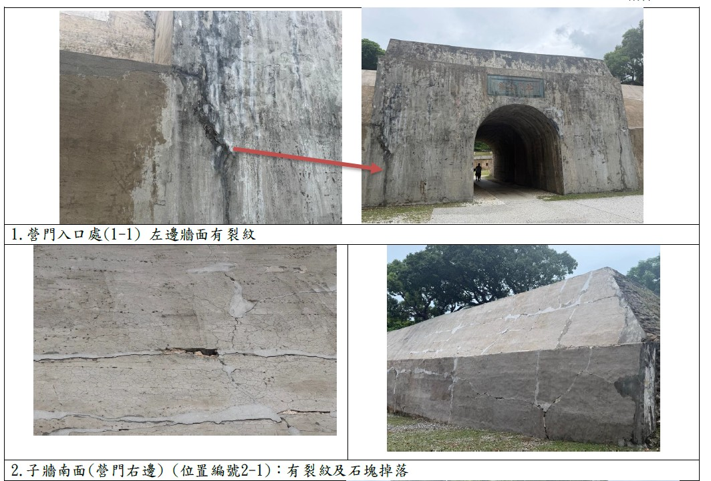
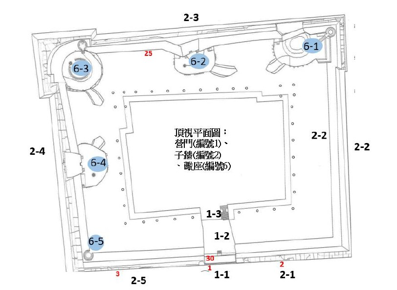

建構視覺化檢核機制的文資管理維護：以國定古蹟滬尾礮臺為例
譚秋慧
關鍵字：文化資產；管理維護；預防性保存；滬尾礮臺；視覺化巡檢
摘 要
文化資產的預防性保存，其關鍵在於日常管維的落實、數據累積及紀錄追蹤。古蹟日常維護檢視核表一般為表單勾選加上文字及照片輔助說明，難以直觀呈現病徵的空間分布，導致動態追蹤與風險評估易與現地現況易產生斷層。
本研究以國定古蹟滬尾礮臺為例，探討地方博物館在有限資源下，透過檢核工具的創新，建構視覺化檢核機制的文資管理維護紀錄。古蹟管理單位新北市淡水古蹟博物館（以下簡稱淡古館）於推動日常管維項目盤整之實務成果，將古蹟日常維護檢視核表與古蹟的平面配置圖進行整合，推動視覺化且具空間座標的動態巡檢機制。巡檢人員在發現異常狀況時，能直接於表單平面圖進行空間定位標著，賦予巡檢紀錄直觀的空間維度。此機制不僅提升了巡檢人員在空間病徵追蹤上的敏銳度，更成為實踐古蹟「病歷式管理」的重要基石。透過這套健檢檔案，管理單位得以將微觀的日常病徵變化，對接專家諮詢與結構監測，透過記錄建檔把看不見的「時間損耗」變成看得見的「科學數據」，讓古蹟能永續經營最基礎也最重要的一環。
本研究展示了古蹟的監測透過表單邏輯的空間視覺化紀錄及追蹤，達成預防性管理維護機制，該動態機制已正式納入核備之「國定古蹟滬尾礮臺管理維護計畫」中，期能為文化資產之永續經營提供實務範式。
以往古蹟日常維護檢視表的紀錄多以表格勾選，異常狀況以文字敘述及照片輔助之方式填報。此方式較難以直觀及準確呈現建築病徵（如裂縫、發霉、壁癌、白華等）的「空間分布」，導致後續檢的動態追蹤與風險評估與現場實況易產生空間認知上的斷層。
1.2場域特性與資源限制
淡古館轄管多處文化資產（包含國定及市定古蹟及歷史建築），建材涵蓋石、磚、木等，且古蹟蹟環境、類別規模、型式、構造及具有價值之構件文物各有不同特性，但以往皆使用參考文化部文化資產局之「古蹟管理維護計畫參考範本」，為一體適用之通用版。
1.3預防性保存與日常維護之重要性
文化資產保存強調保養重於修復，定期、常態性的巡檢與日常維修，能有效早期發現病徵、早期診斷，以降低古蹟劣化的發生率，避免損害破壞擴大。因此有適宜的日常維護檢視檢核表作為依據，才能落實執行日常檢視、維護、發現異常通報等後續效益。
整合日常維護管理檢核表的檢視項目與「古蹟平面配置圖」，推動具備空間座標定位的動態巡檢機制，提升第一線巡檢人員對空間病徵追蹤的敏銳度。
將微觀的日常病徵變化數位化與表格化，把看不見的「時間損耗」轉化為看得見的「科學數據」，作為專家諮詢、結構監測與修繕補助爭取之基石。
盤點轄管文化資產之管理維護計畫、日/月巡檢表，引進專家學者諮詢建議，並透過館員與現場人員的教育訓練，強化整體管理組織的專業與應變能力。
本研究主要採用內容分析及深度訪談法之質性研究取向。研究以新北市立淡水古蹟博物館每月執行之「古蹟日常管理維護檢視檢核表」為核心標的，系統性梳理新制客製化巡檢表單之實務資料。在內容分析部分，依據《古蹟及歷史建築管理維護手冊》之規範脈絡，以淡古館每月執行之「古蹟日常管理維護檢視檢核表」為核心資料，對表單中之損壞類別、空間標註與處置紀錄進行系統性分類；在深度訪談部分，為釐清表單客製化後對實際執行效益之影響，採半結構式訪談架構，對第一線巡檢人員與進行訪談，探討新制表單在現場檢視操作與長照病歷式動態追蹤之實質效益，進而提出預防性保存之優化策略。
四、研究結果
4.1 建立視覺化動態巡檢機制及病歷資料建檔
例行檢視表單包含文字敘述(日期、巡視人、天候、各部位現狀描述)、影像對照(相同角度、相同位置的年度對比照片)、數據指標(裂縫寬度、含水率、溫濕度值)及處理紀錄(發現問題後的報修、清潔或加固過程等)。同時搭配
「古蹟平面配置圖」進行空間註記，使異常狀況追蹤、修繕位置一目了然，確保維護資訊的完整性。



4.2 落實預防性修復與專案工程執行
（1）預防性小型修繕： 針對小規模損壞採取預防性醫療策略，例如針對非破壞性之微小裂縫進行灌漿、加固或局部補強，避免損害擴大。
（2）整體改善規劃：維護紀錄之核心價值在於「預警功能」，透過長期數據追蹤，掌握古蹟劣化趨勢（如裂縫位移、白華現象及滲水情形等），並針對異常狀況建立「追蹤處理清單」，作為未來爭取大規模修繕預算之依據，例如2024年爭取中央補助啟動「國定古蹟滬尾礮臺漏水改善修復工程規劃設計」，也將依此進行後續修復工程。
4.3 完成跨單位教育訓練與制度核備
（1）辦理員工教育訓練，針對館員、現場營運人員及保全人員舉辦定期教育訓練課程（涵蓋古蹟保養維護、災害預防、實地檢視等），確保檢核標準的一致性。
（2）「國定古蹟滬尾礮臺管理維護計畫」已正式獲主管機關核備，將實務經驗制度化。
五、結論
（1）透過表單創新，整合平面圖與視覺化定位標註，即可顯著降低傳統巡檢與現地狀況的斷層。此「動態巡檢與病歷式管理」模式，可作為同類型軍事或石造古蹟（如基隆、澎湖礮臺）管維機制的借鏡。
（2）將微觀的時間損耗轉換為視覺化與數據化的「健康檔案」，實現了「保養重於修建」的核心理念，確保古蹟修繕脈絡不因人員異動而中斷。
（3）滬尾礮臺的管理維護從「被動維修」轉型為「主動資產管理與前瞻再利用」，在維持古蹟建築本體安全的基礎上，展現具前瞻性的文化資產永續經營。
參考文獻
文化部文化資產局（2012）。古蹟及歷史建築管理維護手冊，4-18。